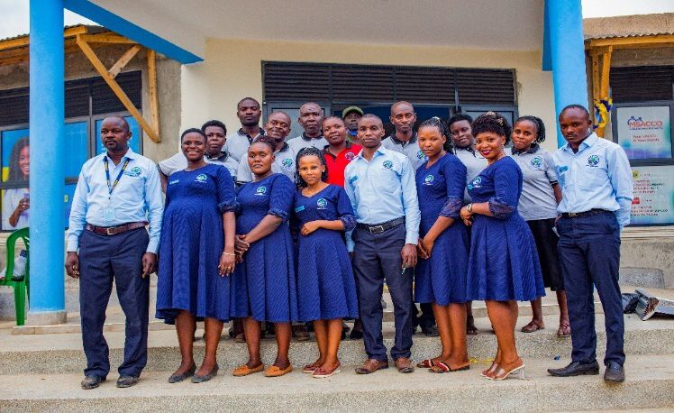

BACKGROUND TO BUSAIGA COOPERATIVE SAVING AND CREDIT SOCIETY LTD
1.0 Historical Background to Busaiga Cooperative Saving and Credit Society Ltd
Busaiga Cooperative Savings and Credit Society Ltd traces its roots from a group of 10 members involved in brewing and selling Local brew (Waragi). The members would brew together to generate money as a group to support their families. However, it was realized that the business of brewing was exclusive to some members of the community especially the born again and other religious sects. In 1991, the members decided to form themselves into a ROSCA where money from individual businesses would be collected and partly given to a single member of the group and save part.
With Mr. Clovice Makune at the helm, the founding members included:
- Mr. Lawrence Kusemererwa
- Mr. Lawrence Kamara (RIP)
- Mr. Arrone Kasaija
- Mr. Edward Kyomya (RIP)
- Miss Joan Bonabana
- Mr. Yosia Katuramu
- Mr. David Mwesige
- Mr. Peter Bakuna
- Mr. Clovice Nyakaana
By the end of 1998, the group had grown to 30 members on the strength of availability of Banana (Ndizi) ideal for waragi making. The group was hit by the Banana bacteria wilt that saw a reduction in the production of the local brew. Undeterred, the members changed their model to saving small amounts of money which they would on-lend to themselves and distribute the revenue at the end of the year. By the end of 2003, the group had grown to 150. With the dire need to grow to a sustainable institution, 2006 saw the transformation of the informal group into a registered financial Cooperative in the name of Busaiga Savings and Credit Cooperative Society (Busaiga SACCO) under registration No REG NO 6681/RCS.
With land provided by one of the members, a home for the SACCO was constructed using their own labour and local construction materials that were readily available within the area (Bikenkya and mud). To date, the SACCO boasts of a modern state-of-the-art office building in Busaiga and a branch network.
Busaiga SACCO has sustainably served the communities of Western Uganda including Fort Portal City, Kichwamba, Harugongo and Hakibaale Sub-counties of Kabarole District, Kanara Subcounty in Ntoroka District, and Bundibugyo district.
Key Trended Performance Indicators
| 2019 | 2020 | 2021 | 2022 | 2023 | |
|---|---|---|---|---|---|
| Membership | 2,148 | 2,344 | 2,662 | 3,116 | 3,789 |
| Savings | 712,601,950 | 779,460,439 | 831,489,953 | 1,152,584,926 | 1,358,924,263 |
| Shares | 144,083,700 | 164,132,200 | 200,685,653 | 321,588,497 | 379,531,897 |
| Outstanding Loan Portfolio | 839,742,016 | 883,128,760 | 957,157,199 | 1,167,503,539 | 1,595,890,454 |
| Total Assets | 1,287,181,142 | 1,660,051,185 | 1,908,803,311 | 2,313,858,129 | 2,508,289,775 |
| PAR > 30 Days | 5 | 6 | 6 | 5 | 4 |
| Loan to Saving + Share Capital ratio | 98% | 94% | 93% | 79% | 92% |
| Loan to Asset Ratio | 65% | 53% | 50% | 50% | 64% |
| OSS | 120 | 121 | 130 | 150 | 200 |
1.1 Vision
A Leading SACCO providing affordable financial services to members.
1.2 Mission
To provide sustainable financial savings and credit services that will economically empower the members.
1.3 Strategic Objectives
- Strengthening Credit Management System and Culture for improved portfolio quality, yield and affordability through appropriate methodology
- Strengthening the SACCOs savings management systems and culture for competitiveness and savings growth as well as offering attractive return on deposit
- To build customer centric system for effective and efficient Microfinance service delivery
- Increase Operating Self Sufficiency ratio above the current 158%
- Build an appropriate staff establishment structure to aid effective implementation of the SACCO’s strategy and nurture a performance-based system to facilitate human resource attraction, development and retention for effective implementation of Busaiga SACCO’s strategy
- Computerize all departments and systems
- Strengthening governance structure and nurturing an inclusive leadership in the SACCO that is accountable to all stakeholders
2.0 Leadership and Governance
2.1 The General Assembly
The supreme organ of Busaiga Cooperative Saving and Credit Society Ltd is the General Assembly, composed of all the members.
2.2 The Board of Directors and the Supervisory Committee
The Board is the second highest organ of Busaiga Cooperative Saving and Credit Society Ltd below the General Assembly.
Currently, the Board comprises seven Directors. As of June 2024, the Board is headed by Mr. Waako Robert, a leader so passionate about the growth of the SACCO. The following comprise the Board of Directors:
| Name | Designation |
|---|---|
| Mr. Waako Robert | Board Chairman |
| Kalemera Hannington | Secretary |
| Kabubwinga Juliet | Treasurer |
| Sanyu Vincent | Vice Chairperson |
| Murungi Margret | Chairperson - Human Resources Committee |
| Kabubwinga Juliet | Chairperson - Finance Committee |
| Kalemera Hannington | Member |
In line with Cooperative practices, the SACCO has a three-member Supervisory Board charged with undertaking internal audit of SACCO operations with the following membership:
| Name | Designation |
|---|---|
| Nyakaisiki Margret | Chairperson |
| Kobusinge Stella | |
| Muganyizi Hebert |
2.3 Management
Technical work is undertaken by 30 officials who constitute the management team headed by Mrs. Kusemererwa K Mastulla in the capacity of Chief Executive Officer. For the last 11 years, Mastulla has championed transformation and steady growth of Busaiga SACCO to a regulated and growing financial cooperative. To date, the SACCO has been licensed by UMRA.
To enhance efficiency and effectiveness, the Management team is arranged into three departments: Loans, Finance, and Marketing.